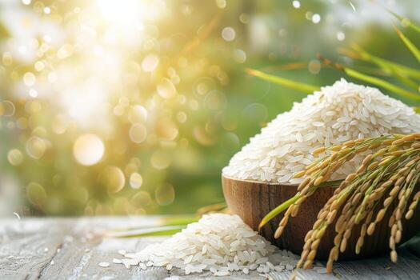
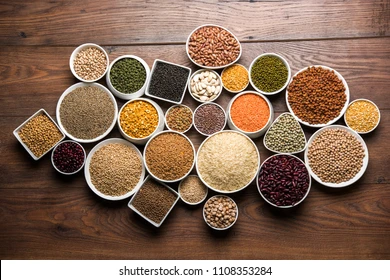
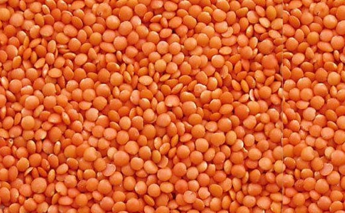
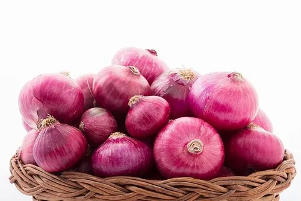

Non-Perishable
Rice
- India’s best-quality aromatic Basmati, Non‑Basmati, and Parboiled rice varieties.
- Export-grade grains
- Strong aroma
- Private-label options
Suitable for retail chains, wholesalers & HORECA supply.
Pulses
 - Wholesome, protein-rich pulses sourced directly from trusted mills.
- Varieties: Toor, Chana, Urad, Moong, Masoor
- Hygienically cleaned, purity-tested & compliant with international food standards.
Millets

- Ancient superfood grains ideal for health markets
- Bajra, Ragi, Foxtail & more
- Highly nutritious, gluten-free and used in cereals, snacks, bakery & wellness foods
Edible Oils
- Pure oils from certified mills (Sunflower, Soybean, Mustard)
- Bulk or retail packaging available
- Meets global food-grade safety and packaging expectations
Perishable
Fresh Onions
- High‑quality, hand‑sorted onions with strong flavor and long shelf life.
- Colour: Red, White, Pink
- Sizes: 45–65+ mm
- Packaging: 5kg / 10kg / 20kg / 50kg mesh bags
- Supply: Round‑the‑year supply with optimal transport conditions